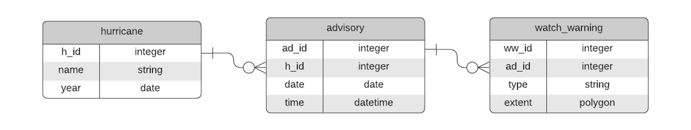
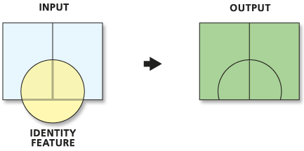
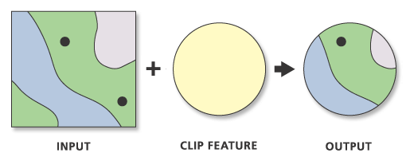

Geospatial
Visualization
Visualization
School of Architecture
SQL and Environmental/Social Justice (?)
- Today' Outline
- Abigail Fleming
- Environmental/Social Justice and GIS
- University of Miami Environmental Justice Clinic, School of Law
- Structured Query Language (SQL)
- Relational Database Management Systems (RDBMS)
- Joins: attribute and spatial
- Select, Transform, Save
- Overlay Tools
- Vector layer overlays
- Clipping
- Abigail Fleming
Structured Query Language (SQL)

- The Join: Relational and Spatial
The “Join” is a concept from the world of Relational Databases, SQL and set theory, but the term is used generally to talk about combining data from one or more entities based on the relationship between those entities. In the land of Relational Databases a Join is the intersection between two sets (tables/entities).
Relational Join (attribute based)
- SQL - Structured Query Language
Widely used even outside the world of strictly “relational” databases. Created to operate on Relational Databases to retrieve and manipulate data.
SQL is often used for data analytic purposes - to aggregate values, sort, group, etc.
SQL
SELECT watch_warning.extent, watch_warning.type
FROM hurricane, advisory, watch_warning
WHERE hurricane.name = “Ian”
AND hurricane.h_id = advisory.h_id
AND advisory.ad_id = watch_warning.ad_id
SQL
SELECT watch_warning.type, COUNT(*)
FROM hurricane, advisory, watch_warning
WHERE hurricane.name = “Ian”
AND hurricane.h_id = advisory.h_id
AND advisory.ad_id = watch_warning.ad_id
GROUP BY watch_warning.type
TROP STORM WATCH, 2
HURRICANE WATCH, 5
TROP STORM WARNING, 1
HURRICANE WARNING, 10
Spatial Join
Analogous to a relational Join, but uses spatial attributes to accomplish the Join. GIS facilitates this kind of Join.
Spatial Join
SELECT watch_warning.type, COUNT(*)
FROM hurricane, advisory, watch_warning
WHERE hurricane.name = “Ian”
AND hurricane.h_id = advisory.h_id
AND advisory.ad_id = watch_warning.ad_id
AND st_within(city.postion, watch_warning.extent)
GROUP BY watch_warning.type
TROP STORM WATCH, 1
HURRICANE WATCH, 1
TROP STORM WARNING, 1
HURRICANE WARNING, 2
Vector Data Overlays
- Data Structures: Connection and Transformation
- Overlay tools
- Intersect
- Union
- Subtract
- Symmetric Difference
- Identity
- Cover
- Clipping
- Sub-setting data with polygons
- Raster or vector
- Overlay tools

image credit: Overlay. wiki.GIS.com
Intersection of Two Vector Layers
- Only geometries and attributes that overlap are preserved
- Attributes from both layers copied to new feature
- Output geometry is lowest dimension of input geometries - Ratio (ArcGIS) or Overlap (QGIS) analysis
- Attributes calculated as percentage of original area for each new polygon

- Two rectangles in one layer and one circle in second layer
- Three features in two layers to begin
- Two features in one layer as a result - Similar to logical AND
Intersect (Analysis). ArcGIS Pro Help.Calculating percentage of overlap of two layers in QGIS 3. GIS StackExchange
Union of Two Vector Layers
- All geometries and attributes preserved
- FID's are labelled according to layer names
- All features are of original size or smaller (never larger) - Ratio (ArcGIS) or Overlap (QGIS) analysis
- Attributes calculated as percentage of original area for each new polygon

- Two rectangles in one layer and one circle in second layer
- Three features in two layers to begin
- Five features in one layer as a result - Similar to logical OR
Erase (Subtract) of Two Vector Layers
- Only geometries and attributes from input preserved
- All features are of original size or smaller (never larger) - Ratio (ArcGIS) or Overlap (QGIS) analysis
- Attributes calculated as percentage of original area for each new polygon

- Four polygons one layer and one square in second layer
- Five features in two layers to begin
- Four features in one layer as a result (with multipart) - Similar to logical AND NOT
Erase (Analysis). ArcGIS Pro Help.
Less common Operations on Two Vector Layers
- Symmetric Difference
- All geometries and attributes that do not co-exist are preserved
- Similar to logical XOR
- (A union B) subtract (A intersect B) - Identity
- Extent of input with geometry and attributes from both layers merged
- (A subtract B) union (A intersect B) - Cover or Update
- Similar to union in extent, but only preserves input geometry and attributes if feature not in update, otherwise copies update attributes to new geometry
- A union (B subtract A)



Overlay. wiki.GIS.com
Identity (Analysis). ArcGIS Pro Help.
Update (Analysis). ArGIS Pro Help
Symmetrical Difference. ArcMap Help
Identity (Analysis). ArcGIS Pro Help.
Update (Analysis). ArGIS Pro Help
Symmetrical Difference. ArcMap Help
Clip Vector with Vector (crop)
- Only geometries and attributes from input preserved
- All features are of original size or smaller (never larger) - Both input and clip features can be points lines or polygons
- Be careful of unexpected results
 - Four polygons and two points in one layer and one circle in clip layer
- Seven features in two layers to begin
- Four features in one layer as a result (with multi geometries)
Clipping line layer based on polygons with QGIS? GIS StackExchange.
Clip (Analysis). ArcGIS Pro Help.
Clip (Analysis). ArcGIS Pro Help.
Clip Raster with Vector
- Must use one vector feature to clip
- Make sure projections are the same
- It will function across projections, but makes computer work harder

- Does not have to be rectangle
- Hence not "crop"

Clip Raster (Data Management). ArcGIS Pro Help.
Clipping raster with vector boundaries using QGIS. GIS StackExchange.
Clipping raster with vector boundaries using QGIS. GIS StackExchange.